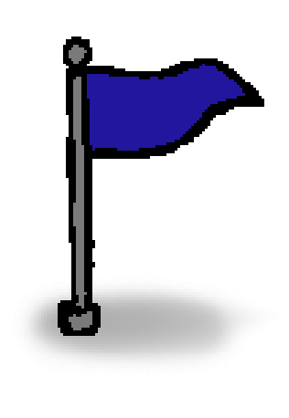
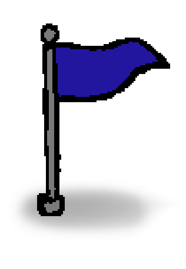

Paint & Park is a game made for Mini Jame Gam 18, and involved drawing coloured paths for vehicles to reach their goals. This game was ranked #11 overall and for its graphics. The game jam ran from June 2nd 2023 at 7:00 AM EST to June 4th 2023 at 4:00 PM EST.
You can play the game directly in browser here.
I was the art lead for this project, drawing visual assets and UI in tandem with another artist, making sure to keep it simple enough to quickly produce and fit within our available submission period, while still being attractive and easy to navigate.

Below are wireframes to quickly mockup the UI layouts vs. polished UI. Everything was kept simplistic because of our strict deadline, so I focused on creating and finding assets that suited the style of the game.
Though we couldn't spend a lot of time creating unique art for the UI, I focused on the style of the typography, and the way it could interact with easily produced art to create visual interest.
Due to time constraints, not all UI could be perfected. This was the planned HUD with animation.
I was also responsible for drawing top down variations of cars, trees, and animated flags.
I closely collaborated with fellow artists to retain a consistent art style, and we constantly refered back to eachother in terms of approving art.
 

Unused assets.